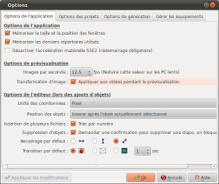
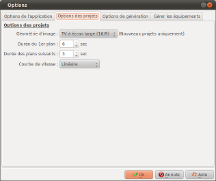
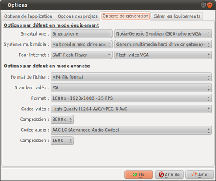
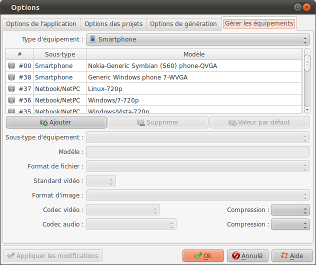

Introduction
La boite "Options" permet de
définir les options du programmes et des projets. Cette
boite est appelée en cliquant sur le bouton  de la barre d'outils.
de la barre d'outils.
Elle est composée des 4 onglets suivants :
Options de l'application

Options de l'application
| Mémoriser
la taille et la position des fenêtres |
- Si cette case est cochée, les
tailles et positions de toutes les fenêtres et
boites de dialogue de ffDiaporama seront
sauvegardées pour être réutilisées
la prochaine fois que vous utiliserez ffDiaporama.
|
| Mémoriser les derniers
répertoires utilisés |
- Si cette case est cochée, les répertoires
que vous utilisez pour les images, les vidéos,
les projets, les musiques et les générations
de film seront sauvegardés pour être
réutilisés la prochaine fois que vous
utiliserez ffDiaporama.
|
Options de prévisualisation
| Images par
seconde |
- Défini le nombre d'images par secondes qui
seront générées pour afficher la
prévisualisation.
Note : Plus ce nombre est élevé et plus la
prévisualisation sera fluide, par contre, plus les
ressources du PC seront sollicités.
Réduisez ce nombre sur des PC peu performant ou si la
jauge du lecteur multimédia est fréquemment dans
le rouge.
|
| Transformation
d'image (Appliquer aux vidéos pendant la
prévisualisation) |
- Si cette case est cochée, les effets de
transformations seront appliqués aux images des
vidéos pendant la prévisualisation.
Note : Certains effets sont particulièrement long
à calculer et peuvent rendre la prévisualisation
particulièrement lente. Décocher cette case
permet alors de garder une prévisualisation fluide. |
Options de l'éditeur
Unité des
coordonnées
|
Cette option permet de
sélectionner l'unité des coordonnées qui
sera utilisée dans les boites de dialogue de
propriétés parmi :
- Pourcentage : Les coordonnées (X,Y Largeur et
Hauteur) sont exprimées en pourcentage
- Pixel : Les coordonnées (X,Y Largeur et
Hauteur) sont exprimées en pixel par rapport
à un écran en mode 1080p
|
Position
des objets
|
Cette option permet de
régler la position qu'occupent les nouveaux objets
dans la ligne de temps général lors des
insertions.
- Si cette option est placée sur Insérer
après l'objet actuellement
sélectionné, alors les nouvelles
diapositives seront créés après la
diapositive en cours.
- Si cette option est placée sur Ajouter
à la fin du projet, alors les nouvelles
diapositives seront créés à la fin du
projet.
|
Insertion
de plusieurs fichiers
|
Cette option permet de
régler la manière dont seront triés les
fichiers quand vous sélectionnez plusieurs fichiers
dans Ajout
de fichier.
- Si cette case est cochée, les fichiers seront
triés par le numéro les terminant :
Exemple : Si vous sélectionnez IMG_0025,
IMG_0032, MVI_0029 et MVI_0040,
les fichiers seront insérés comme suit :
IMG_0025, MVI_0029, IMG_0032 et MVI_0040
- Si cette case n'est pas cochée, les fichiers
sont triés par ordre alphabétique.
|
Suppression d'objet
|
Si cette case est
cochée, une demande de confirmation s'affichera
chaque fois que vous supprimerez :
- Une diapositive dans la fenêtre principale
- Un plan ou un bloque dans la fenêtre des
propriétés des diapositives
|
Recadrage
par défaut
|
Défini le type de
recadrage à effectuer lors de l'insertion de fichier
:
 Les fichiers seront recadrés pour que la
totalité de la largeur de l'image soit
affichée
Les fichiers seront recadrés pour que la
totalité de la largeur de l'image soit
affichée Les fichiers seront recadrés pour que la
totalité de la hauteur de l'image soit
affichée
Les fichiers seront recadrés pour que la
totalité de la hauteur de l'image soit
affichée Les fichiers seront recadrés au mieux
Les fichiers seront recadrés au mieux
|
|
Transition par défaut |
Défini le type de
transition à insérer entre les diapositives lors
des insertions :
 Choisi aléatoirement une transition dans la
bibliothèque
Choisi aléatoirement une transition dans la
bibliothèque Aucune transition
Aucune transition Transition de type fondu enchaîné
Transition de type fondu enchaîné
|
Options des projets

|
Géométrie
d'image
|
Sélectionne la
géométrie d'image à utiliser pour la
création des projets.
Trois type de géométrie sont disponibles :
- 4/3 : Correspond aux anciennes TV à écran
(presque) carré
- 16/9 : Correspond aux TV modernes à écran
rectangulaire
- 2.35/1 : Correspond au format cinéma (sur une
TV ce format utilisera des bandes noires en haut et en
bas.)
Note : La géométrie d'un projet est définie
une fois pour toute lors de sa création. Il n'est
plus possible de la modifier par la suite.
|
Durée
du 1er plan
|
Défini la durée
par défaut du premier plan des diapositives lors de
leurs création.
|
Durée
des plans suivants
|
Défini la durée
par défaut à donner aux plans suivants. |
| Courbe
de vitesse |
Défini la courbe de
vitesse à utiliser pour les transitions et les
animations :
- Courbe linéaire : La vitesse des transitions et
des animations est linéaire : La vitesse est
constante.
- Quart de sinus : La vitesse des transitions et des
animations suit le premier quart de la courbe d'un
sinus : Concrètement, transitions et animations
démarrent lentement, puis s'accélèrent
puis se terminent lentement.
|
Options de génération

Options par défaut en mode équipement
Smartphone
|
Sélectionne le type
d'équipement et le modèle d'équipement
qui seront proposés par défaut lorsque vous
cliquerez sur le bouton "Lecteur et Smartphone" du menu
"Générer le film"
|
Système
multimédia
|
Sélectionne le type
d'équipement et le modèle d'équipement
qui seront proposés par défaut lorsque vous
cliquerez sur le bouton "Système multimédia"
du menu "Générer le film" |
Pour
Internet
|
Sélectionne le type
d'équipement et le modèle d'équipement
qui seront proposés par défaut lorsque vous
cliquerez sur le bouton "Pour Internet" du menu
"Générer le film" |
Options par défaut en mode avancé
Format
de fichier
|
Sélectionne le type de
fichier par défaut à utiliser pour la
génération des vidéos parmi la liste
proposée.
|
Standard
vidéo
|
Sélectionne le
standard vidéo par défaut à utiliser, PAL
ou NTSC.
|
Format
|
Sélectionne le format
d'image vidéo par défaut à utiliser parmi
la liste proposée
|
Codec
vidéo
|
Sélectionne le codec
vidéo par défaut à utiliser parmi la liste
proposée |
Compression
|
Sélectionne le taux de
compression vidéo par défaut à utiliser
parmi la liste proposée |
Codec
audio
|
Sélectionne le codec
audio par défaut à utiliser parmi la liste
proposée |
|
Compression |
Sélectionne le taux de
compression audio par défaut à utiliser parmi la
liste proposée |
Gérer les équipements

Cet onglet permet de modifier la base de données des
profils d'équipements. La base de données est
constituée en réalité de deux bases :
- La base par défaut (celle qui est fournie avec
ffDiaporama). Ces équipement sont inscris dans le
fichier de configuration global de ffDiaporama
- Les équipements que vous modifiez ou ajoutez. Ces
équipement sont inscris dans votre fichier de
configuration personnel
La zone Type d'équipement permet de sélectionner le
type d'équipement à afficher dans la liste.
La liste affiche les catégories et type d'équipement
présent dans la base.
 Les équipements
précédés de cette icône sont
définis dans la base de données par défaut.
Les équipements
précédés de cette icône sont
définis dans la base de données par défaut. Les
équipements précédés de cette icône
sont ceux que vous avez définis vous même ou ceux
de la base de données par défaut que vous avez
modifiés.
Les
équipements précédés de cette icône
sont ceux que vous avez définis vous même ou ceux
de la base de données par défaut que vous avez
modifiés.
Les boutons suivants permettent d'agir sur la base de
données :

Ajouter : Permet de
créer un nouvel équipement qui vient s'ajouter dans
la base de données.
La création d'un nouvel
équipement s'effectue en 3 étapes :
1- Vous devez d'abord créer un équipement
2- Vous définissez les différents paramètres
3- Vous cliquez sur "Appliquer les modifications" pour
enregistrer les paramètres

Supprimer : Permet
de supprimer un équipement.
Noter que vous ne pouvez
supprimer que des équipements que vous avez
créés. Ceux affichés avec l’icône

Valeur par
défaut : Permet d'annuler les modifications que vous avez
effectué sur un équipement défini dans la base
de données par défaut de ffDiaporama
Sous-type d'équipement : Permet de sélectionner la
catégorie dans laquelle est classé l'équipement
Modèle : Entrer ici le nom de l'équipement (zone de
texte libre)
Puis : L'ensemble des paramètres de génération de
vidéo associés au profil de l'équipement (Format
de fichier, Standard vidéo, etc...)
Voir aussi
ffDiaporama 0.99.alpha3 -
Juillet 2011